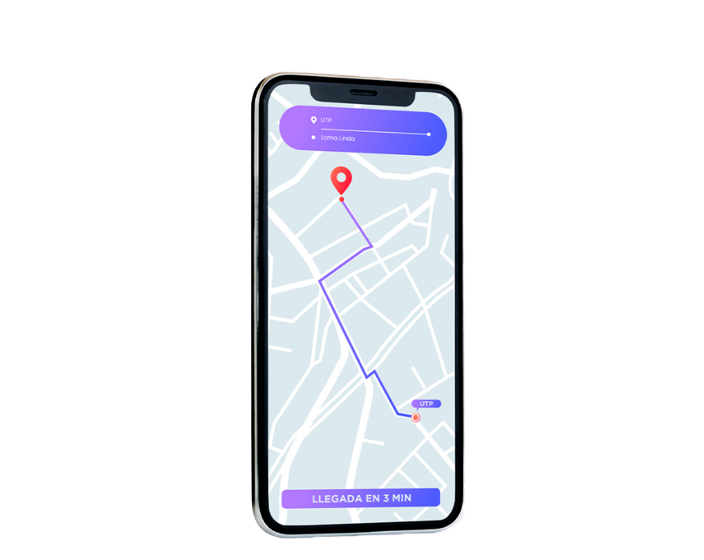

Mejora tu Experiencia de Viaje con Ruta
Optimiza tus rutas, recibe notificaciones en tiempo real, y disfruta de una experiencia de viaje más fluida.
Optimiza tus rutas, recibe notificaciones en tiempo real, y disfruta de una experiencia de viaje más fluida.
Descubre cómo Ruta facilita tus desplazamientos diarios. Con actualizaciones en tiempo real sobre cambios en las rutas, notificaciones de retrasos, y estimaciones precisas de llegada, siempre estarás un paso adelante. Optimiza tu experiencia de viaje con las herramientas esenciales que Ruta tiene para ofrecer.
Obtén actualizaciones inmediatas sobre los cambios en la ruta.
Recibe notificaciones sobre cualquier retraso en tiempo real.

Consulta el tiempo estimado de llegada de tu bus.

Calcula el tiempo total estimado para llegar a tu destino.
Explora las avanzadas funcionalidades de Ruta para una experiencia de transporte más completa. Desde el seguimiento en tiempo real y la calificación de conductores, hasta el monitoreo del clima y un historial detallado de tus viajes. Ruta te proporciona todo lo que necesitas para un viaje más eficiente y seguro.

Monitorea en tiempo real la ubicación de tu bus.
Actualizaciones sobre condiciones climáticas en tu ruta.

Asigna y visualiza calificaciones de conductores.
Consulta el registro de tus viajes anteriores.
"Ruta ha transformado mi experiencia de viaje. ¡Muy útil!"
- Ana Gómez"Excelente para mantenerme informado sobre el estado del tráfico."
- Luis Martínez"La aplicación me permite planificar mejor mis viajes diarios."
- Carolina López"Muy fácil de usar y con información precisa sobre las rutas."
- Javier PérezPuedes consultar los cambios en la ruta en tiempo real a través del mapa de nuestra app.
Las notificaciones sobre retrasos se envían automáticamente a tu dispositivo en caso de cualquier cambio. Recuerda activar las notificaciones de la app.
Sí, puedes ver el tiempo estimado de llegada del bus en la parte inferior del mapa.
Después de completar tu viaje, automáticamente se abrirá una interfaz donde podrás elegir calificar al conductor.